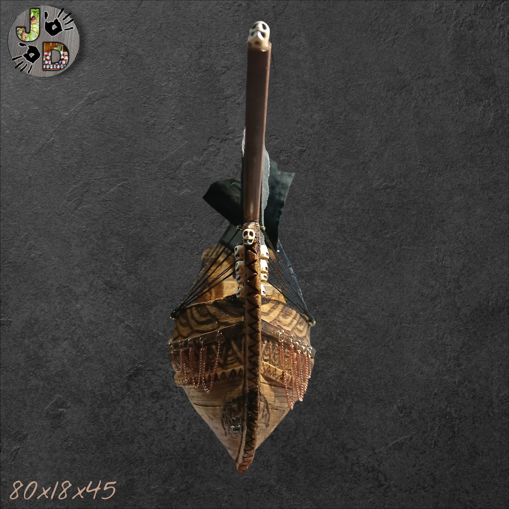
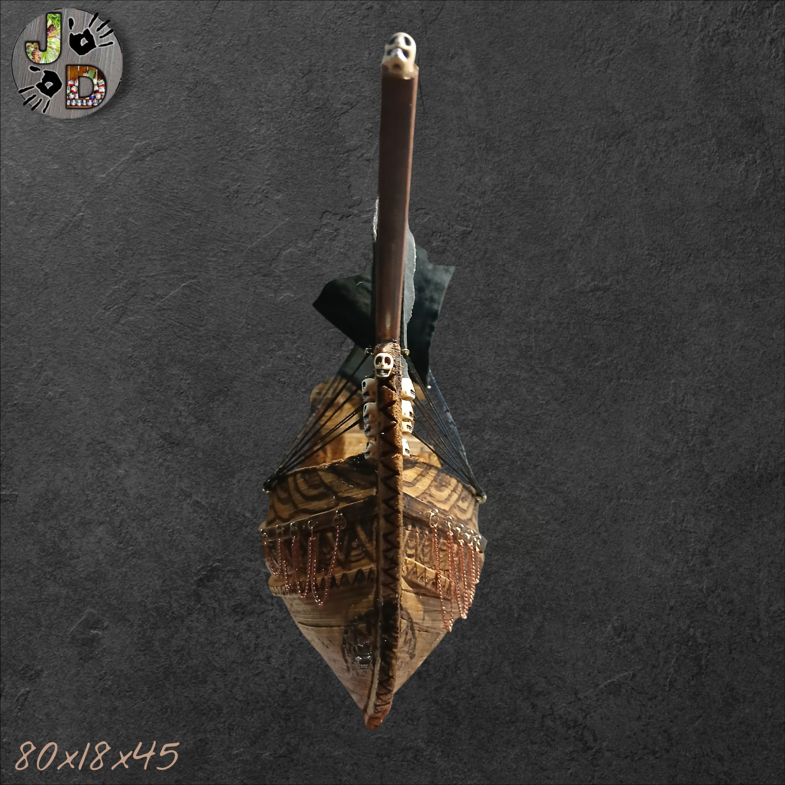
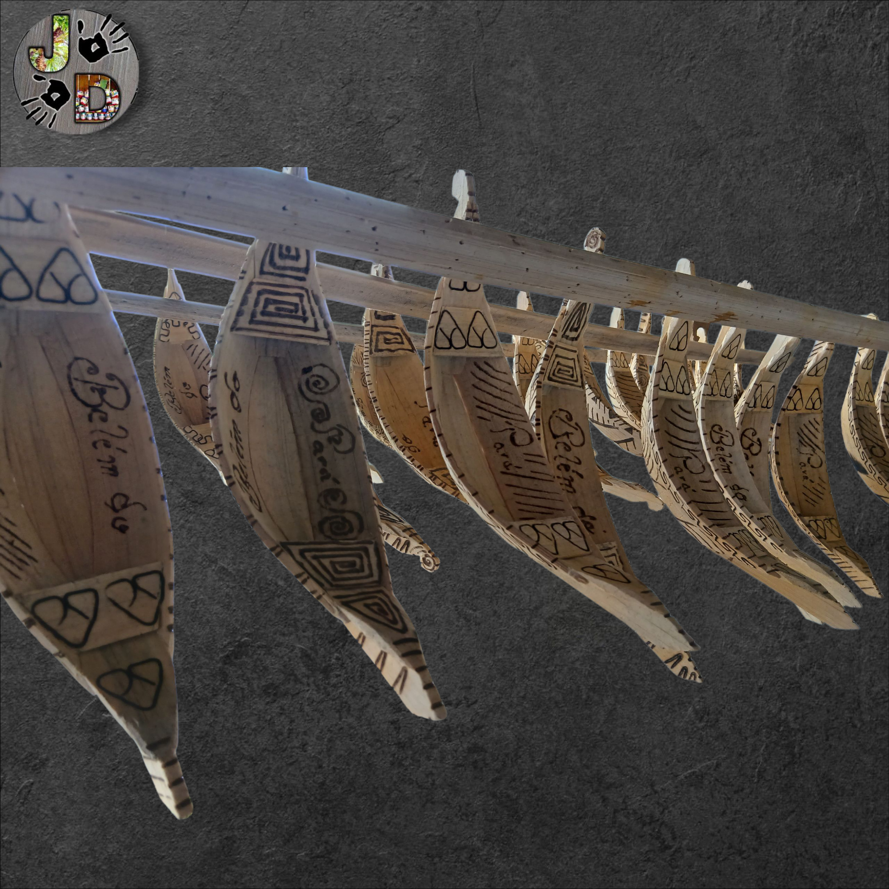
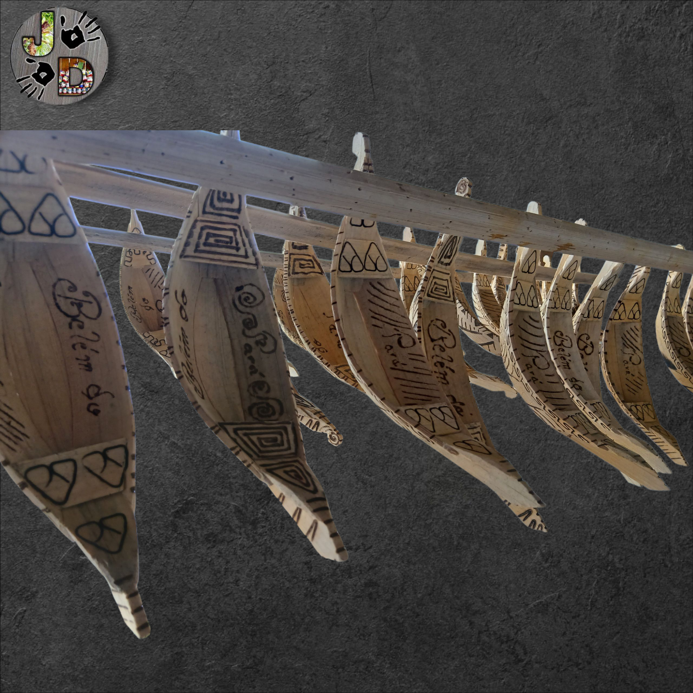

Barco


 



 



@jd.arte.em.miriti üåøüî• DETALHES QUE NASCEM DO FOGO üî•üåø Cada pe√ßa da JD Arte em Miriti passa pelo toque da pirografia, marcada com linhas √∫nicas que valorizam a fibra natural do miriti ü奂ú® Arte leve, original e cheia de tradi√ß√£o. üìç Abaetetuba/PA üí¨ Se quiser o seu, diz ‚Äúquero‚Äù! #ArteAmaz√¥nica #PirografiaEmMiriti #JDArteEmMiriti #CulturaDoPará ‚ô¨ Hoist The Colours - Bass Singers Version - The Wellermen & Bobby Bass & Eric Hollaway
Peça única, feita com fibra de Miriti, selado e invernizado em verniz maritimo, totalmente impermeável.
Acabamento em artes pirograficas.
Modelos Artesanais de Barco, Veleiro e Canoa: Navegando entre Arte e Técnica
A produção artesanal de barcos, veleiros ou canoas — seja em tamanho real ou em miniatura — combina tradição náutica, marcenaria e design. Artesãos de várias partes do mundo dedicam-se à criação de modelos em madeira, com quilha, costado, mastros, velas costuradas e acabamento refinado. Conforme a descrição do kit “La Provençale” escala 1:20, os modelos de barcos mediterrâneos utilizavam restos de madeira de construção de barcos maiores e tinham casco plano para alcançar enseadas rasas. :contentReference[oaicite:15]{index=15}
Materiais, Técnica e Produção Detalhada
Para um modelo ou peça de arte desse tipo, o artesão inicia com desenho ou planta, escolhe madeiras adequadas (freixo, bordo, teca, etc.), recorta quilha e costado, monta forma e cava o casco ou monta costado sobre frames. No modelismo de alta qualidade, utiliza-se corte a laser ou CNC para precisão, mas o acabamento final ainda exige trabalho manual, como mostrado nos modelos de “wooden handcrafted model ships” que declaram “hundreds of hours go into the construction of building each model ship”. :contentReference[oaicite:16]{index=16}
Valor Artístico e Comercial
Como peça de artesanato, um barco, veleiro ou canoa em madeira torna-se destaque visual e de storytelling: “feito à mão”, “madeira de demolição”, “escala de colecionador”. No contexto do portfólio online de JD, essas peças são ideais para vídeos mostrando processo de montagem, velas, verniz e detalhes do casco. São diferenciadas e têm apelo para compradores que buscam exclusividade ou decoração náutica.
Fonte: Wooden handcrafted model ships – Old Modern Handicrafts. :contentReference[oaicite:17]{index=17}
Mare Nostrum 1:35 Wooden Model Fishing Ship Kit – Artesanía Latina. :contentReference[oaicite:18]{index=18}